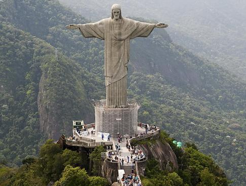
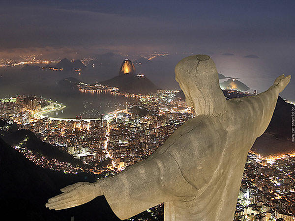

Kristaus Atpirkėjo statula
Kristaus Atpirkėjo statula
Kristaus Atpirkėjo statula (port. Cristo Redentor) − 39.6 m aukščio Jėzaus Kristaus statula Rio de Žaneire (Brazilija), pastatyta ant Korkovado kalno.


Statula buvo sukurta per penkerius metus ir atidengta 1931 m. spalio 12 d. Ji tuomet kainavo 250 000 dolerių. Ši statula tapo ne tik krikščionybės, bet ir Rio de Žaneiro simboliu.
Autoriai:
Heitor da Silva Costa,
Paul Landowski.